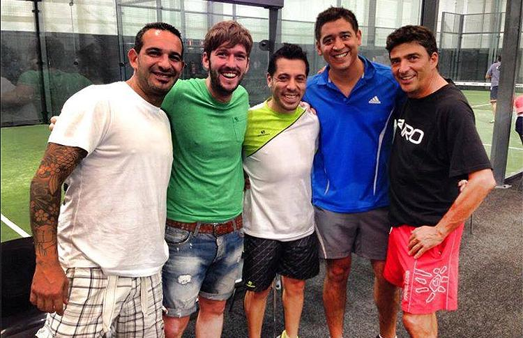

¿Quiénes somos?
VarPadel surgió a partir de un grupo de cinco amigos que siempre les apasionó el padel. Comenzamos de chicos jugando juntos, y después de más de una decada de practicar el deporte vimos que nuestra amor por él podía convertirse también en nuestro profesión. Por lo que juntos nos asociamos para comenzar este proyecto.
Nuestro sueño es crear un lugar con canchas de última generación, pero sin dejar de lado el toque amigable de la cancha de barrio con el que crecimos y que otras personas puedan disfrutar como nosotros del padel.


Nuestras canchas
Contamos con cinco canchas techadas de cesped sintético, con vista panorámica por medio de cristales de vidrio templado, como las usadas en el circuito profesional. Además para los que prefieren un estilo más conservador, tenemos dos canchas al aire libre de superficie dura.